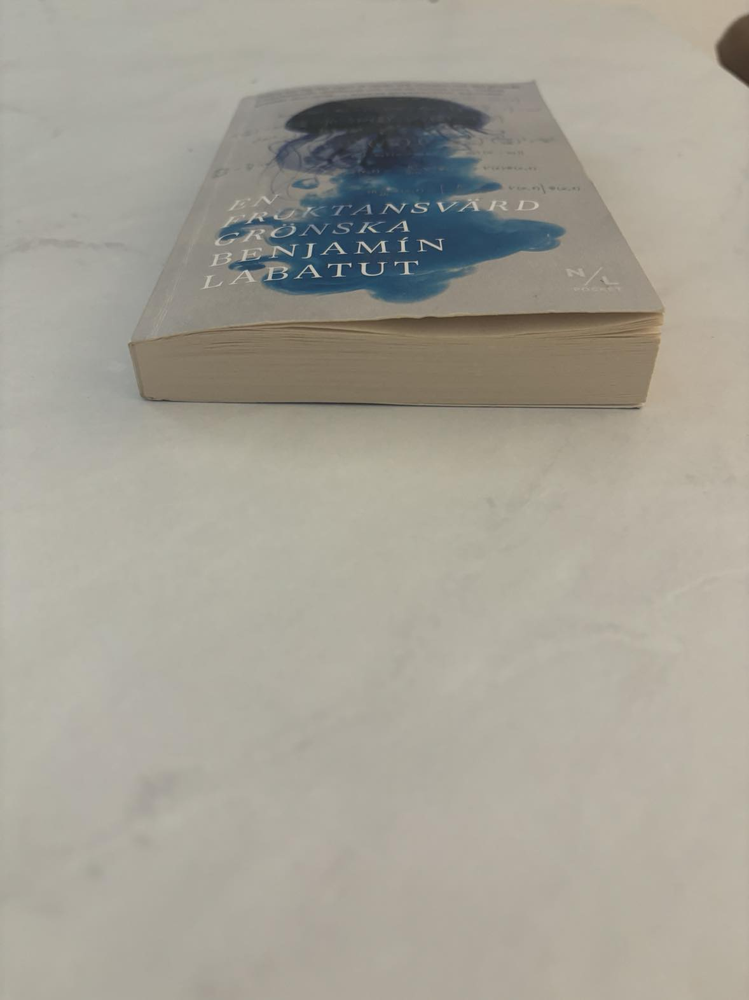
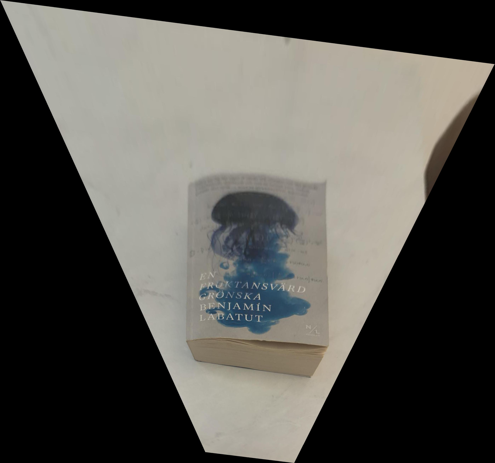
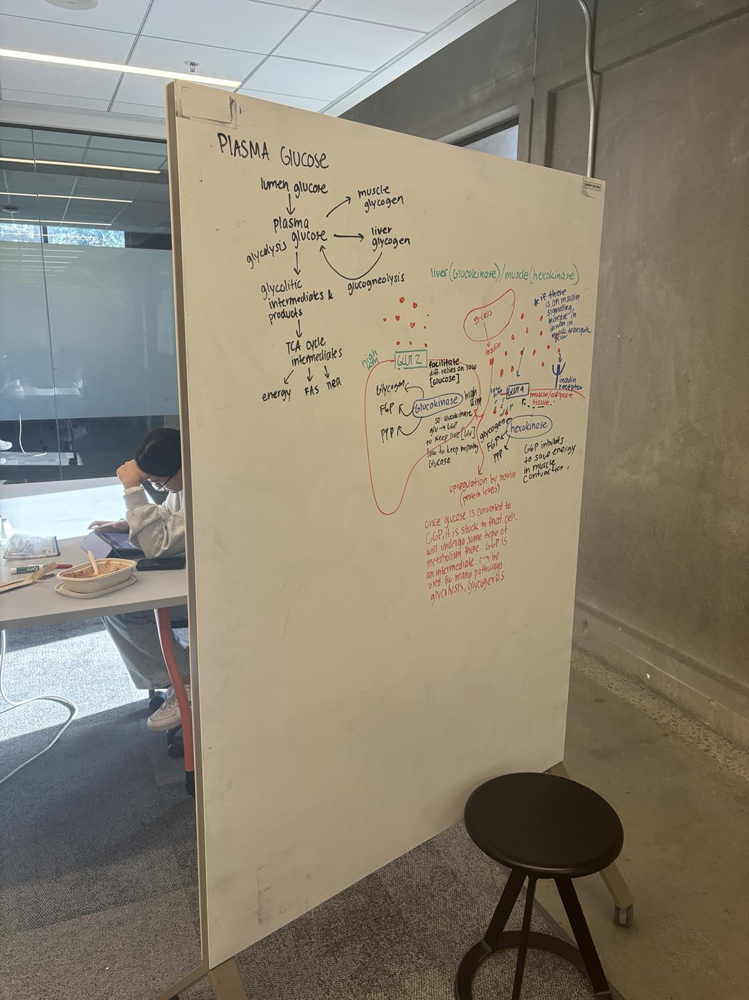
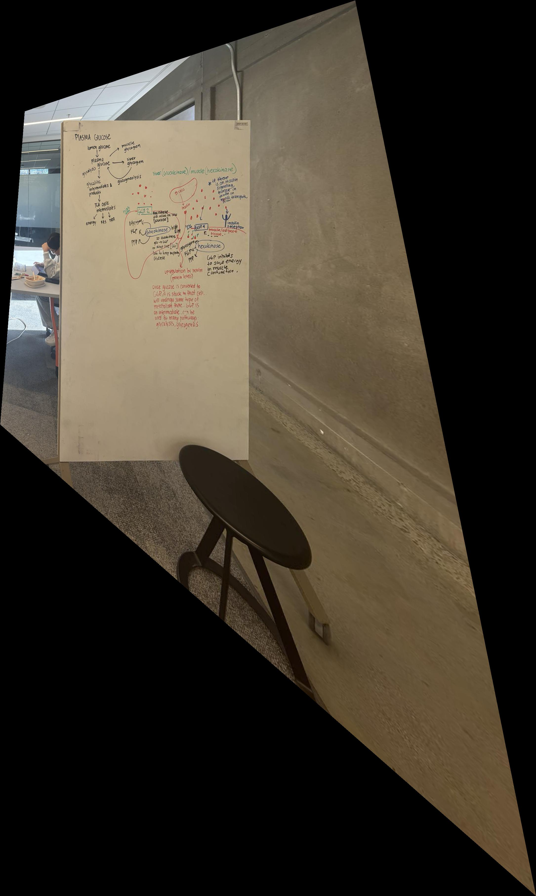
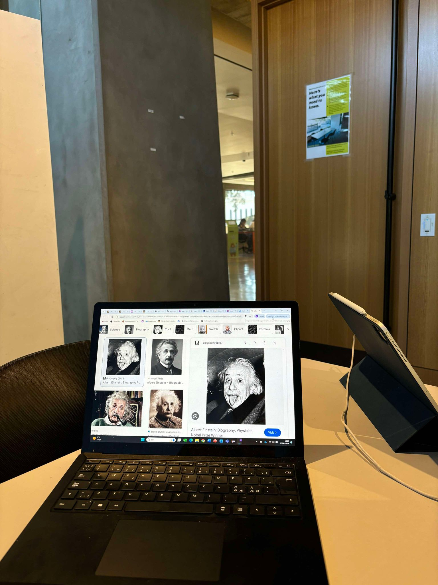
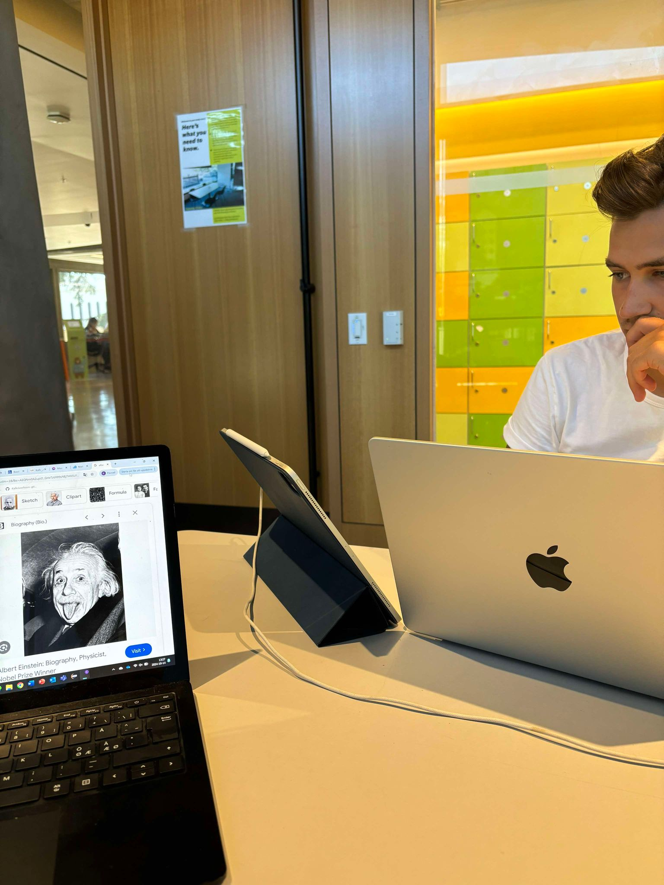
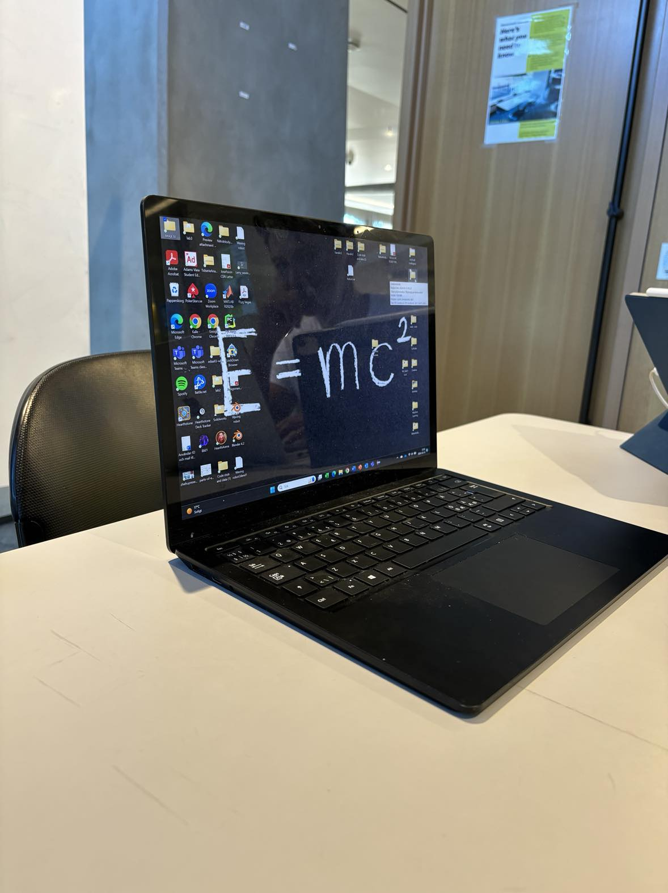

https://github.com/KalleJosefsson/KalleJosefsson.github.io/blob/main/project4.html
Project 4: Mosaics
In order to create mosaics, we need to go over some theory, which is done below step for step:
1. Homography Transformation
Points \( p = (x, y) \) in one image are mapped to points \( p' = (x', y') \) in another image:
\[
s \begin{bmatrix} x' \\ y' \\ 1 \end{bmatrix} =
\mathbf{H} \begin{bmatrix} x \\ y \\ 1 \end{bmatrix}
\]
where \( \mathbf{H} \) is the \( 3 \times 3 \) homography matrix and \( s \) is a scale factor.
2. Structure of Homography Matrix (note the scaling factor h_{33} = 1)\( \mathbf{H} \)
\[
\mathbf{H} =
\begin{bmatrix}
h_{11} & h_{12} & h_{13} \\
h_{21} & h_{22} & h_{23} \\
h_{31} & h_{32} & 1
\end{bmatrix}
\]
3. Linear System for Estimating \( \mathbf{H} \)
Given corresponding points \( (x, y) \) and \( (x', y') \), the following equations are formed:
\[
\begin{aligned}
x' &= \frac{h_{11}x + h_{12}y + h_{13}}{h_{31}x + h_{32}y + 1} \\
y' &= \frac{h_{21}x + h_{22}y + h_{23}}{h_{31}x + h_{32}y + 1}
\end{aligned}
\]
4. Matrix Formulation for Multiple Points
The system can be linearized as:
\[
\mathbf{A} \mathbf{h} = 0
\]
where \( \mathbf{A} \) is the design matrix and \( \mathbf{h} \) is a vector of the elements of \( \mathbf{H} \).
The design matrix \( \mathbf{A} \) for a set of corresponding points \( (x_1, y_1) \) and \( (x_1', y_1') \) is constructed as follows:
\[
\mathbf{A} = \begin{bmatrix}
x_1 & y_1 & 1 & 0 & 0 & 0 & -x_1 x_1' & -y_1 x_1' \\
0 & 0 & 0 & x_1 & y_1 & 1 & -x_1 y_1' & -y_1 y_1'
\end{bmatrix}
\]
Each pair of corresponding points contributes two rows to the matrix \( \mathbf{A} \). For additional point correspondences, the same pattern repeats, adding new rows to \( \mathbf{A} \). The system is then solved for the vector \( \mathbf{h} \), which contains the elements \( h_{11}, h_{12}, h_{13}, h_{21}, h_{22}, h_{23}, h_{31}, h_{32} \).
5. Using More Points and Least Squares
Although four points are sufficient to estimate the homography matrix \( \mathbf{H} \), using more than four points improves accuracy. By including additional point correspondences, we create an overdetermined system, which can be solved using the least squares method. The least squares approach minimizes the sum of squared errors between the predicted and actual point correspondences, yielding a more robust estimate of \( \mathbf{H} \) that accounts for noise and small variations in the data.
6. Image Warping
Image warping is a key step in creating mosaics, where the goal is to transform one image to align with another using the homography matrix \( \mathbf{H} \). Once we have calculated the homography matrix, we apply it to map the points in the source image to the corresponding points in the target image.
To warp an image, for each pixel \( (x', y') \) in the target image, we calculate the corresponding point \( (x, y) \) in the source image using the inverse of the homography transformation:
\[
s \begin{bmatrix} x \\ y \\ 1 \end{bmatrix} =
\mathbf{H}^{-1} \begin{bmatrix} x' \\ y' \\ 1 \end{bmatrix}
\]
Here, \( \mathbf{H}^{-1} \) is the inverse of the homography matrix, and the resulting point \( (x, y) \) is mapped back into the original image.
Since the result of this transformation may not lie exactly on an integer pixel, interpolation is used to estimate the pixel intensity at fractional coordinates. Common interpolation methods include nearest-neighbor, bilinear, or bicubic interpolation. This ensures that the warped image retains high-quality visual features.
The warping process is repeated for every pixel in the target image, transforming the entire source image to align with the desired view. This enables smooth blending and accurate alignment between images in the final mosaic.
7. Bounding Box of the Warped Image
After warping an image using the homography matrix \( \mathbf{H} \), the transformed image might not align neatly within the original image boundaries. To ensure that the entire warped image is visible, we compute the bounding box of the transformed image.
The bounding box is determined by applying the homography transformation to the four corners of the source image. The corners of an image at coordinates \( (0, 0), (w, 0), (w, h), (0, h) \) (where \( w \) and \( h \) are the width and height of the source image, respectively) are warped using the homography matrix:
\[
\begin{bmatrix} x' \\ y' \\ 1 \end{bmatrix} = \mathbf{H} \begin{bmatrix} x \\ y \\ 1 \end{bmatrix}
\]
Once the new positions of the four corners are calculated, the minimum and maximum \( x' \) and \( y' \) values provide the extents of the bounding box. This defines the size of the canvas required to display the entire warped image without cropping.
It is important to adjust the image translation so that the warped image fits within the computed bounding box.
8. Image Stitching Using Two Corresponding Points and alpha blending
Instead of manually determining the overlap and setting an offset, we can use two corresponding points from each image to align the images. These corresponding points are feature points (e.g., corners or key points) that match between the two images. By selecting two pairs of corresponding points, one pair from each image, we can align the images precisely and perform blending in the overlapping region.
The stitching process begins by identifying two pairs of corresponding points, \( p_1 \) and \( p_2 \) in the first image, and their corresponding points \( p_1' \) and \( p_2' \) in the second image. These points are then used to calculate a transformation that aligns the two images. By ensuring that both \( p_1 \) aligns with \( p_1' \), and \( p_2 \) aligns with \( p_2' \), we can accurately position the images for stitching.
The transformation required to align the two images is typically a combination of translation, scaling, and rotation. Once this transformation is applied, the images are aligned based on the two selected points. We can then perform alpha blending in the overlapping region to create a seamless transition between the two images.
Stitching Process Using Two Corresponding Points
- Identify two corresponding points \( p_1, p_1' \) in the first image and their corresponding point in the second image by warping the correspondence points.
- Compute the translation matrix \( T \) that translate the point \ p_1\ in the first image to \ p_1'\ in the second image. This should just be in x but due to COP differing slighlty might be slight translation in y.
- Apply the transformation \( T \) to warp the second image so that the pair of corresponding points are aligned with their counterpart in the first image.
- Blend the overlapping region using alpha blending where weight is based on distance from center of each image, decreasing with distance. This ensures a smooth transition between the two aligned images.
- Concatenate the non-overlapping parts of the images with the blended part to form the final mosaic.
9. Image Rectification
Image rectification is the process of transforming two or more images to align them onto a common plane. This technique is particularly useful when dealing with stereo images or overlapping images that need to be stitched together. The goal of rectification is to make corresponding points in the images appear at the same vertical position, which simplifies the stitching or matching process.
Rectification involves calculating the homography transformations needed to warp both images so that their epipolar lines are aligned. Once the images are rectified, any point in one image will have a corresponding point along the same row in the second image. This ensures that when images are stitched together or matched, the alignment is accurate and seamless which is why we warp images to a cneter image.
Below are examples of image rectification applied to two pairs of images. For each pair, we show the original images followed by the rectified versions. The rectified images demonstrate how the homography transformation has changed where the image is projecteed.
9.1 Pair 1: Original and Rectified Images

Figure 1: Original Image of book from the front

Figure 2: Rectified Image seeing the book from above

Figure 3: Original Image of Whiteboard from the left

Figure 4: Rectified Image seing the Whiteboard from the front
These rectified images illustrate how the process transforms the original images, ensuring that they are aligned on the same plane. This alignment is crucial for performing tasks like image stitching or stereo matching, where corresponding points must appear at the same vertical location in both images.
10. Creating the mosaics
Below are the three created mosaics which are created by following the above steps and then combining them together. I will show three examples the last two of them with alpha blending with weights being based on distance from image centers.
The first example I tried to just use a vertical mask with weights being changen linearly from 0-1 and 1-0 for respective images over the blending area. I thought this would work well
since we are stitching the images horizontally but since images are of different size the artifacts could be found.
10.1 Creations of Mosaics

Left image of a group room at Mofitt

Right image of a group room

Mosaic of a studyroam with vertical seams (Notice artifacts)
10.2 Pair 2: Original and Rectified Images

Campus right side

Mosaic with alpha blend based on distance to centers
10.3 Pair 3: Original and Rectified Images

Figure 9: Original Image of object 1 from the front

Figure 10: Rectified Image of object 1 from the side

Figure 11: Original Image of object 2 from the top
These mosaics are my results from 4A and I thought it was really cool that we could do this without any type of machine learning our new data. I can't stress enough how important
it is to not alter the center of projection when taking the photos or not picking pixel perfect correspondences. I had to do this in order to get good results I noticed after a lot
of frustration.